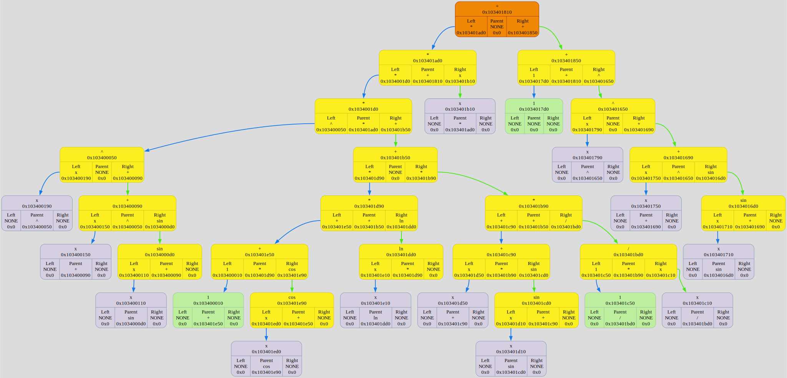

Colors meanings:
variable node
⮑ left subtree edge
number node
⮑ right subtree edge
operation node
⮑ unknown what edge
pointed node
unknown what node
NameTable:
Binary Tree[0x16ef031c0] born at "/Users/anatolij/Documents/GitHub/Differentiator/source/main.cpp": 12, name 'tree'
| Number | Variable | Value | Status |
| 0 | x | 0 | VAR_STATUS_USING |
| 1 | y | 0 | VAR_STATUS_DISUSING |
| 2 | z | 0 | VAR_STATUS_DISUSING |
| Number | Operation | LaTexSymbol |
| 0 | + | + |
| 1 | - | - |
| 2 | * | \cdot |
| 3 | / | frac |
| 4 | sin | \sin |
| 5 | cos | \cos |
| 6 | sqrt | \sqrt[] |
| 7 | ^ | ^ |
| 8 | log | log_ |
| 9 | ln | \ln |
| 10 | exp | e^ |
DUMP #1: function ExpressionReader was called from /Users/anatolij/Documents/GitHub/Differentiator/source/Differentiator_reader.cpp: 82

Binary Tree[0x16ef03210] born at "/Users/anatolij/Documents/GitHub/Differentiator/source/main.cpp": 17, name 'diff_tree'
DUMP #2: function ExpressionDifferentiation was called from /Users/anatolij/Documents/GitHub/Differentiator/source/Differentiator.cpp: 254

DUMP #3: function Simplification was called from /Users/anatolij/Documents/GitHub/Differentiator/source/Differentiator.cpp: 257

DUMP #4: function ExpressionDifferentiation was called from /Users/anatolij/Documents/GitHub/Differentiator/source/Differentiator.cpp: 254

DUMP #5: function Simplification was called from /Users/anatolij/Documents/GitHub/Differentiator/source/Differentiator.cpp: 257

DUMP #6: function ExpressionDifferentiation was called from /Users/anatolij/Documents/GitHub/Differentiator/source/Differentiator.cpp: 254

DUMP #7: function Simplification was called from /Users/anatolij/Documents/GitHub/Differentiator/source/Differentiator.cpp: 257

DUMP #8: function ExpressionDifferentiation was called from /Users/anatolij/Documents/GitHub/Differentiator/source/Differentiator.cpp: 254

DUMP #9: function Simplification was called from /Users/anatolij/Documents/GitHub/Differentiator/source/Differentiator.cpp: 257

DUMP #10: function ExpressionDifferentiation was called from /Users/anatolij/Documents/GitHub/Differentiator/source/Differentiator.cpp: 254

DUMP #11: function Simplification was called from /Users/anatolij/Documents/GitHub/Differentiator/source/Differentiator.cpp: 257

DUMP #12: function ExpressionDifferentiation was called from /Users/anatolij/Documents/GitHub/Differentiator/source/Differentiator.cpp: 254

DUMP #13: function Simplification was called from /Users/anatolij/Documents/GitHub/Differentiator/source/Differentiator.cpp: 257

DUMP #14: function ExpressionDifferentiation was called from /Users/anatolij/Documents/GitHub/Differentiator/source/Differentiator.cpp: 254

DUMP #15: function Simplification was called from /Users/anatolij/Documents/GitHub/Differentiator/source/Differentiator.cpp: 257

DUMP #16: function ExpressionDifferentiation was called from /Users/anatolij/Documents/GitHub/Differentiator/source/Differentiator.cpp: 254

DUMP #17: function Simplification was called from /Users/anatolij/Documents/GitHub/Differentiator/source/Differentiator.cpp: 257

DUMP #18: function ExpressionDifferentiation was called from /Users/anatolij/Documents/GitHub/Differentiator/source/Differentiator.cpp: 254

DUMP #19: function Simplification was called from /Users/anatolij/Documents/GitHub/Differentiator/source/Differentiator.cpp: 257

DUMP #20: function ExpressionDifferentiation was called from /Users/anatolij/Documents/GitHub/Differentiator/source/Differentiator.cpp: 254

DUMP #21: function Simplification was called from /Users/anatolij/Documents/GitHub/Differentiator/source/Differentiator.cpp: 257

DUMP #22: function ExpressionDifferentiation was called from /Users/anatolij/Documents/GitHub/Differentiator/source/Differentiator.cpp: 254

DUMP #23: function Simplification was called from /Users/anatolij/Documents/GitHub/Differentiator/source/Differentiator.cpp: 257